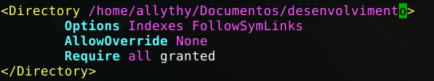
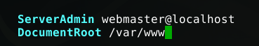
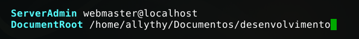

Neste artigo, vamos aprender como alterar o diretório padrão do Apache. Digamos que você está desenvolvendo uma aplicação em PHP na sua máquina, mas toda vez que você tem que editar um arquivo, criar ou fazer algum tipo de manipulação no seu projeto é necessário entrar como superusuário (root), o que não é tão interessante. Por conta disso, vamos alterar o diretório padrão do Apache.
Como alterar o diretório padrão do Apache
Primeiro vamos abrir o arquivo de configuração do Apache:
sudo nano /etc/apache2/apache2.conf
Você vai procurar pele linha que tenha <Directory /var/www>, que deve estar igual à imagem abaixo:

Substitua /var/www pelo diretório que você deseja. Eu coloquei esse diretório que vocês podem ver abaixo:

Feito isso, vamos alterar esse arquivo 000-default.conf
sudo nano /etc/apache2/sites-available/000-default.conf
Procure pela linha que tenha DocumentRoot, que deve estar igual à imagem abaixo:

Onde tem /var/www coloque o mesmo diretório que você colocou no arquivo apache2.conf.

Feito isso, temos que reiniciar o Apache. Para isso, use o seguinte comando:
sudo systemctl restart apache2
Pronto, já alteramos o diretório padrão do Apache.